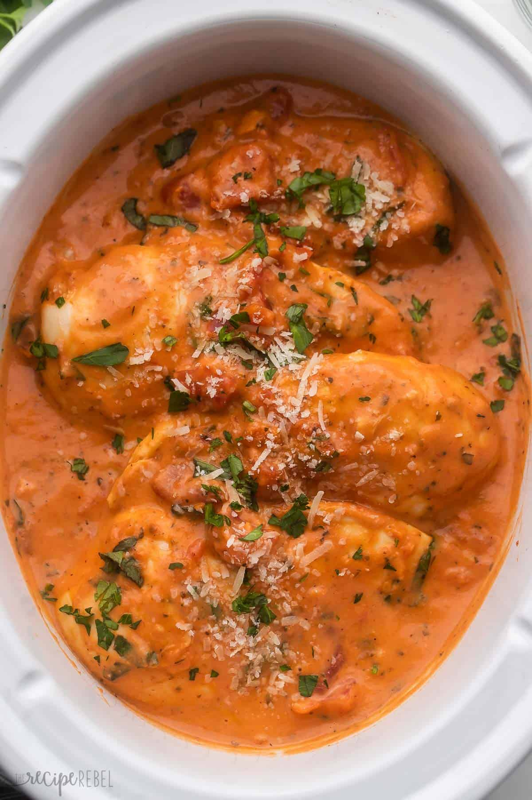

Home
Crockpot Tomato Basil Chicken

Description
This Slow Cooker Creamy Tomato Basil Chicken Breast is SO easy and flavorful, you wouldn't
believe it only has just a few ingredients! The perfect easy crockpot chicken recipe for
busy weeknights!
Prep Time
5 minutes
Cook Time
3 hours
Servings
4
Ingredients
- 1 can diced tomatoes with italian herbs (with juice - 14oz or 398ml)
- 1 cup marinara sauce
- 3 cloves garlic (finely minced)
- 1 teaspoon salt
- 1 teaspoon italian seasoning
- 1/2 teaspoon dried basil
- 1/4 teaspoon pepper
- 1/2 cup heavy whipping cream
- 1 tablespoons cornstarch
- 2lbs boneless skinless chicken breasts (about 4)
- 2 tablespoons finely chopped fresh basil
- Grated parmesan cheese for serving
Instructions
- Add the tomatoes, sauce, garlic, salt, Italian seasoning, basil, and pepper
to a 4- to 6-quart slow cooker. Stir.
- In a small bowl, whisk together the cream and cornstarch and add to the slow cooker.
- Add the chicken and press down into the sauce.
- Cook on low for 3 to 4 hours, or until a meat thermometer inserted in the thickest
part of the chicken reaches 165°F.
- Stir in the basil, taste and adjust seasonings as desired. Serve with the Parmesan.
Nutrition
Calories: 265cal, Carbohydrates: 9g, Protein: 26g, Fat: 14g, Saturated Fat: 8g,
Polyunsaturated Fat: 1g, Monounsaturated Fat: 4g, Trans Fat: 0.01g, Cholesterol: 106mg,
Sodium: 1012mg, Potassium: 652mg, Fiber: 1g, Sugar: 3g, Vitamin A: 800IU, Vitamin C: 7mg,
Calcium: 51mg, Iron: 1mg